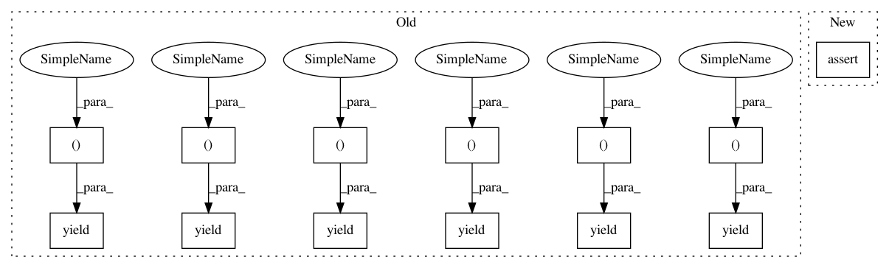

d9df02db1f0ffd4187de3ee4b750d9aaacc05c2a,dipy/tracking/tests/test_metrics.py,,test_cut_plane,#,155
Before Change
[ 2. , 3.5 , 0. , 0.70710677, 1. ],
[ 2. , 2.5 , 2.5 , 0.81649655, 2. ]]
hitx=pf.cut_plane(bundlex,refx)
yield assert_array_almost_equal, hitx[0], expected_hit0
yield assert_array_almost_equal, hitx[1], expected_hit1
// check that algorithm allows types other than float32
bundlex[0] = np.asarray(bundlex[0], dtype=np.float64)
hitx=pf.cut_plane(bundlex,refx)
yield assert_array_almost_equal, hitx[0], expected_hit0
yield assert_array_almost_equal, hitx[1], expected_hit1
refx = np.asarray(refx, dtype=np.float64)
hitx=pf.cut_plane(bundlex,refx)
yield assert_array_almost_equal, hitx[0], expected_hit0
yield assert_array_almost_equal, hitx[1], expected_hit1
def test_normalized_3vec():
vec = [1, 2, 3]
After Change
refx = np.asarray(refx, dtype=np.float64)
hitx=pf.cut_plane(bundlex,refx)
assert_array_almost_equal( hitx[0], expected_hit0)
assert_array_almost_equal( hitx[1], expected_hit1)
def test_normalized_3vec():
vec = [1, 2, 3]
In pattern: SUPERPATTERN
Frequency: 5
Non-data size: 13
Instances
Project Name: nipy/dipy
Commit Name: d9df02db1f0ffd4187de3ee4b750d9aaacc05c2a
Time: 2010-12-19
Author: garyfallidis@gmail.com
File Name: dipy/tracking/tests/test_metrics.py
Class Name:
Method Name: test_cut_plane
Project Name: scipy/scipy
Commit Name: ba710006a020ff2749627bcd93a90a59bca4518f
Time: 2014-06-23
Author: argriffi@ncsu.edu
File Name: scipy/sparse/linalg/eigen/arpack/tests/test_arpack.py
Class Name:
Method Name: _check_svds
Project Name: scipy/scipy
Commit Name: c7b6fc16d53b92f7c5afc8735a2b284d7c625b8b
Time: 2017-07-06
Author: pav@iki.fi
File Name: scipy/sparse/linalg/tests/test_matfuncs.py
Class Name: TestExpM
Method Name: test_misc_types
Project Name: nipy/dipy
Commit Name: 3ea65c44d4ffe1a1846d4a21fc42bd873ae31ca4
Time: 2010-12-19
Author: garyfallidis@gmail.com
File Name: dipy/tracking/tests/test_track_volumes.py
Class Name:
Method Name: test_track_volumes
Project Name: scipy/scipy
Commit Name: 91c71d9b2c680c67d70944f290eb39a6b5e4522c
Time: 2017-07-23
Author: pav@iki.fi
File Name: scipy/special/tests/test_basic.py
Class Name:
Method Name: test_sph_harm